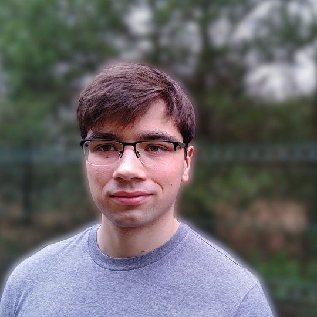

Glance at Experience
Six scientific publications;
Over 20 data science & analytics projects;
Over 30 GitHub repositories;
Over 120 projects completed on DataCamp;
More than 200 data science courses completed;
Described by students as the most charismatic lecturer in the faculty.
Hobby
Tea, matcha, yerba mate, but no coffee;
Psychology (to know what’s in your mind);
Calisthenics (for breaking my own limits);
I am one with the Force, the Force is with me.
Combining my background in law and mathematics, I’m currently focused on my PhD research, where I focus on evaluating forensic entomology evidence, particularly in estimating the age of insect traces. I’m also exploring ways to apply data science to legal challenges, using advanced analytics to improve the accuracy and reliability of legal processes.
Involved in the organisation of the entire event. The workshop part of the event focuses on the applications of large language models and natural language processing. I was responsible for designing the workshop program, supervising the teaching assistants, and coordinating the use of technology throughout the Summer Institute. My role ensures that all technical aspects are seamlessly integrated, contributing to the smooth and effective execution of the program.
grant no.: 2021/41/B/NZ8/00474;
principal Investigator: prof. UAM dr hab. Szymon Matuszewski
I focus on analyzing and structuring data, transforming unstructured sources — such as thermal imaging — into structured formats. My role involves preparing visualisations, as well as proposing and implementing mathematical solutions to complex problems. When necessary, I also programmatically develop and apply these solutions to ensure the project’s success.
I specialize in applying data science and AI to legal issues, leveraging advanced analytics to solve complex problems. However, my expertise is not limited to the legal field.
A new journey inspired by passion
Master’s Degree, Specialization in Theoretical Mathematics
Master Thesis: Good, Evil and Obligation: a multimodal Deontic Logic
Bachelor’s Degree, Specialization in Data Analysis
Bachelor Thesis: Semantics for Deontic Logics
Master’s Degree, Specialization in Forensic Science
Master Thesis: Evaluation of Evidence from Individualizing Analysis of Handwriting
A hands-on journey into the essentials of saving lives, led by experienced instructors from MEDAID. This intensive course covered everything from assessing accident scenes and understanding injury mechanisms to life-saving skills like airway management, CPR, AED use, and trauma care. It went beyond physical first aid, touching on psychological support, dealing with aggressive victims, and the crucial importance of time in emergencies. More than just a training, it was a powerful reminder of how knowledge and calm action can truly make the difference.
View certificateAn inspiring adventure into the mind, held in the historic heart of Timișoara, Romania — a city where the echoes of Europe's struggle against communism still linger. These Erasmus workshops offered deep dives into emotional intelligence, cognitive flexibility, design and metaphorical thinking, as well as critical thought, biases, and logical fallacies. With brilliant trainers and an unforgettable group of participants, it was less of a course and more of a mind-expanding experience — one that blended psychology, creativity, and a powerful sense of place.
View certificateAn enlightening event that delved into the role of AI in science, the history of surgery, and the timeless struggle of translation (‘lost in translation’ — quite literally). The highlight? An exhibition of rare books, including the first edition of Copernicus' groundbreaking work, De Revolutionibus Orbium Coelestium. Definitely an experience to expand horizons!
View certificateCompleted a course led by the Central Cybercrime Bureau and the Legal Clinic of Adam Mickiewicz University, Poznań. This course focused on identifying and managing digital traces in criminal cases, offering practical insights into forensic approaches to cybercrime.
View certificateCompleted a practical course on safe driving, organized by Škoda. The training covered essential techniques such as navigating slaloms, controlling the vehicle in hazardous conditions (e.g., skidding), emergency braking, and driving on slippery surfaces to enhance overall driving safety and control.
View certificateAttended a week-long international summer school on the mathematical aspects of advanced data analysis methods. This program provided in-depth exposure to the computational and theoretical modeling techniques essential for tackling complex data analysis challenges.
View certificateAs a volunteer at the University Legal Clinic in the Criminal Law Section, I provided free legal assistance to individuals who could not afford professional legal services. My responsibilities included conducting client interviews, analyzing case facts, and preparing comprehensive legal opinions and advice in matters related to criminal law. This experience allowed me to apply my academic knowledge in a practical setting, develop strong analytical and communication skills, and contribute meaningfully to access to justice.
View confirmation